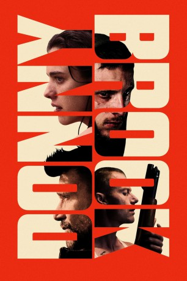
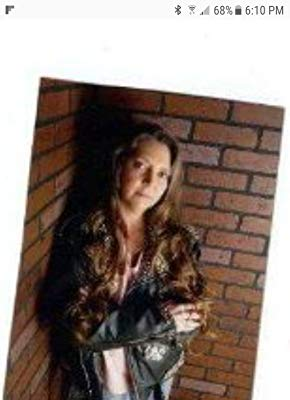
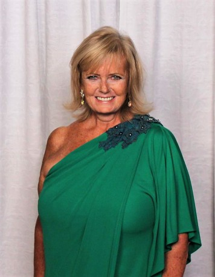

#12096 Donnybrook
 
 IMDB-Wertung: 5.3 / 10
IMDB-Wertung: 5.3 / 10  Metascore: 53
Metascore: 53 
Ex-Marine `Jarhead‘ Earl ist bereit, alles zu tun, um seiner Familie ein besseres Leben zu ermöglichen. Der psychopathische Crystal Meth-Dealer `Chainsaw‘ Angus hinterlässt eine Spur des Todes, wo auch immer er auftaucht. Und seine geheimnisvolle Schwester Delia hat nichts mehr zu verlieren. Die Wege dieser drei Menschen kreuzen sich beim jährlich statt findenden, drei Tage andauernden illegalen Bare-Knuckle-Fight Donnybrook. Auf dessen Sieger wartet ein Preisgeld von 100.000 Dollar und ein besseres Leben. Und auf den Verlierer der Tod.
Jahr: 2018
Dauer: 101 Minuten
FSK:
Land: USA Studio: IFC FilmsTonspuren: DTS - ,
Untertitel:
Auflösung: 1080p (1920x808) Größe: 5724 MB
Genre: Thriller, Drama
Regisseur: Tim Sutton
Drehbuch: Frank Bill, Tim Sutton
Soundtrack: Jens Bjørnkjær, Phil Mossman
Darsteller:
 Adam Bartley als Dote
Adam Bartley als Dote Jamie Bell als Jarhead Earl
Jamie Bell als Jarhead Earl Chris Browning als McGill
Chris Browning als McGill Kevin Crowley als Kelsen
Kevin Crowley als Kelsen James Badge Dale als Whalen
James Badge Dale als Whalen Frank Grillo als Chainsaw Angus
Frank Grillo als Chainsaw Angus- Rhyan Elizabeth Hanavan als Scout
 Pat Healy als Eldon
Pat Healy als Eldon James Landry Hébert als Poe
James Landry Hébert als Poe- Michael King als Bruce
- Valerie Jane Parker als Sarah
 Margaret Qualley als Delia Angus
Margaret Qualley als Delia Angus- Dara Tiller als Tammy
- Ben Aycrigg als Donnybrook Fighter
- Sean Casey als Donnybrook Fighter
 Nick DeKay als Donnybrook Fighter
Nick DeKay als Donnybrook Fighter- Lydia Hand als Donnybrook Fighter
- T. Ryan Mooney als Donnybrook Fighter
- Matthew Reidy als Donnybrook Fighter
- Sue Hopkins als Grandma
- Chris Hahn als Henchman
- Mark Angel als Plain Clothes Policeman (uncredited)
-  Judy McQueen Bauer als Camper / Reveler (uncredited)
-  Anita Farmer Bergman als Spectator (uncredited)
- Mark J Clifford als Reveler (uncredited)
 Christine Dye als Dawn (uncredited)
Christine Dye als Dawn (uncredited)- John French als Police Photographer (uncredited)
 Robert Gerding als Factory Worker (uncredited)
Robert Gerding als Factory Worker (uncredited)- Rajiim A. Gross als Camper / Reveler (uncredited)
- Andi Gudgeon als Call Girl (uncredited)
- Al Harland als Fight Spectator (uncredited)
- Jennifer Joplin als Anthem Singer (uncredited)
- Kenneth King als Fight Spectator (uncredited)
- Bret Aaron Knower als Reveler (uncredited)
- Anita S Martin als Reveler / Biker (uncredited)
- Rodger Masten als Camper / Spectator (uncredited)
- Daphne Matthews als Call Girl / Reveler (uncredited)
- Kevin E. Murphy als Reveler / Fight Spectator (uncredited)
- John Newsom als Crystals seller, fight spectator (uncredited)
- Ted Opalinski als Camper / Fight Spectator (uncredited)
- Cherie Orf als Spectator (uncredited)
- Michelle Poole als Fight Spectator (uncredited)
- Donald Ross als Donnybrook Fighter (uncredited)
- Jeramie Sandor als Reveler / Fight Spectator (uncredited)
- Jimmie Lee Sessoms als Fight spectator (uncredited)
- Alonda Shevette als Daddy Girl / Sex Worker (uncredited)
- Hickory Taylor als Reveller / Camper (uncredited)
- Andrew Van Camp als Reveler / Fighter (uncredited)
- Michael Agee als Police Officer
- David Myers Gregory als Purcell
Datei: X:\2018(A-F)\Donnybrook (2018, FSK, 1920x808).mkv seit 05.12.2019
Festplatte: HD 2017(A-Z)-2018(A-F)
 Es gibt insgesamt 151 Filme in der Gruppe '2018(A-F)'
Es gibt insgesamt 151 Filme in der Gruppe '2018(A-F)'